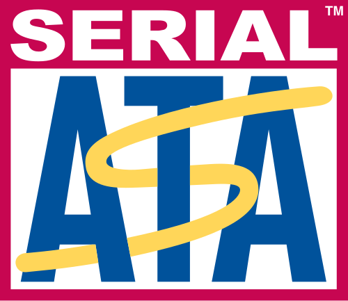
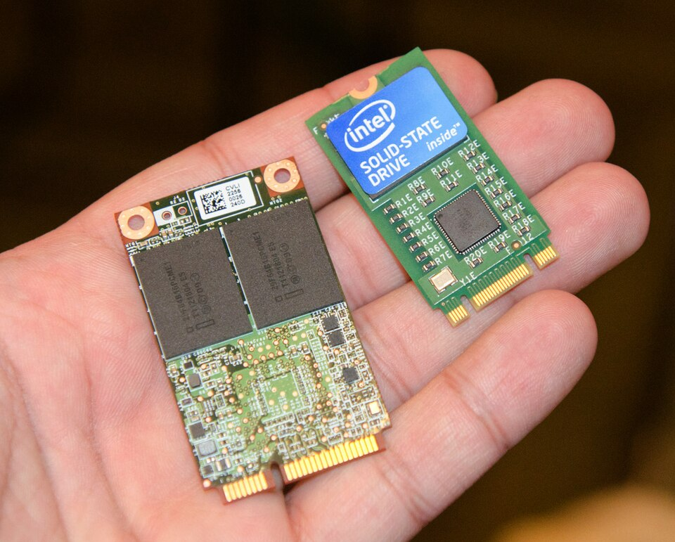
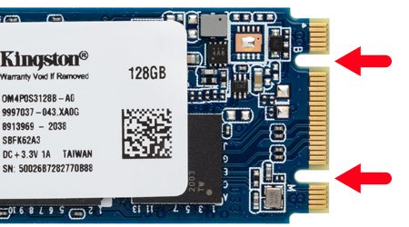

SATA proporciona mayores velocidades, mejor aprovechamiento cuando hay varias unidades, mayor longitud del cable de transmisión de datos y capacidad para conectar unidades al instante, es decir, insertar el dispositivo sin tener que apagar el computador o que sufra un cortocircuito como con los viejos conectores molex.
SATA proporciona mayores velocidades, mejor aprovechamiento cuando hay varias unidades, mayor longitud del cable de transmisión de datos y capacidad para conectar unidades al instante, es decir, insertar el dispositivo sin tener que apagar el computador o que sufra un cortocircuito como con los viejos conectores molex.
La documentación oficial[8] recomienda no usar los términos SATA I, II y III o sus equivalentes numéricos SATA 1.0, 2.0 y 3.0, en la forma abreviada sino el relativo a la velocidad 1,5 Gb/s, 3 Gb/s y 6 Gb/s.
Las unidades que soportan la velocidad de 3 Gb/s no son compatibles con un bus de 1,5 Gb/s.
El método de intercambio de datos (la interfaz de datos) entre los dispositivos conectados a través de un puerto M.2 no es fijo, sino que puede variar entre PCI Express 5.0 (hasta cuatro líneas PCI Express), Serial ATA 3.0, y USB 3.0
(un puerto lógico individual por cada uno de los dos últimos). Está a merced del fabricante del dispositivo o del puerto M.2 elegir qué interfaces se soportarán, dependiendo del nivel deseado tanto de dispositivo como de receptor.
El conector M.2 puede presentar distintas muescas de tecleo que denotan tanto diferentes capacidades como propósitos, evitando así el uso de módulos M.2 en dispositivos incompatibles.

Comparación de un SSD tipo mSATA a la izquierda con uno M.2, 2242 SSD a la derecha.

SATA fue la Interfaz principal utilizada para la tecnología de almacenamiento durante mucho tiempo. Usando cables SATA, las unidades SATA necesitaban dos cables para funcionar. Uno se utiliza para transferir datos a la placa madre y el otro para alimentar la PSU (unidad de fuente de alimentación). El desorden de cables es uno de los problemas que afecta el rendimiento en las carcasas de PC cuando se utilizan varias unidades de almacenamiento SATA. Los portátiles y notebooks delgados, incluyendo los Ultrabooks, ni siquiera tienen espacio para cables SATA, por lo que utilizan el factor de forma M.2. Un SSD de factor de forma M.2 SATA resolvía este problema, ya que no tenía las dos conexiones de cable que se usaban anteriormente en otras unidades de almacenamiento basadas en SATA.
Sin embargo, aunque sea un SSD M.2 no cambia el hecho de que sea un SSD SATA. La principal diferencia entre un SSD M.2 SATA y NVMe es la tecnología de interfaz y los niveles de rendimiento. Un SSD M.2 SATA todavía utiliza la tecnología de interfaz basada en SATA lo que no mejora su velocidad y rendimiento a menos que sea un SSD NVMe M.2.
Un SSD M.2 que solo tiene la llave M, como se muestra en la imagen, será un SSD NVMe. Los SSDs M.2 NVMe utilizan el protocolo NVMe que fue diseñado específicamente para SSDs.
Cuando se combina con el bus PCIe, un SSD NVMe ofrece los últimos niveles de rendimiento y velocidad que se pueden obtener. Los SSDs NVMe se comunican directamente con la CPU
del sistema mediante las ranuras PCIe. Esencialmente, permite que la memoria flash funcione como un SSD directamente a través de las ranuras PCIe en lugar de tener que usar el controlador de comunicación SATA,
que es mucho más lento que un NVMe.
Los SSDs M.2 NVMe están más orientados al rendimiento en comparación con los SSDs M.2 SATA. Al aprovechar el bus PCIe, los SSDs M.2 NVM tienen velocidades de transferencia teóricas de hasta 20Gbps, lo que ya es más rápido en comparación con los SSDs M.2 SATA. con 6Gbps. Los buses PCIe pueden admitir 1x, 4x, 8x y 16x carriles. PCIe 3.0 tiene una velocidad de transferencia efectiva de hasta 985MB/seg por carril, lo que significa que hay una velocidad de transferencia potencial de hasta 16GB/seg. Sin embargo, solo hay x2 y x4 carriles accesibles cuando se usa un factor de forma M.2 con el bus PCIe, lo que se traduce en una velocidad de transferencia máxima de hasta 4GB/seg.